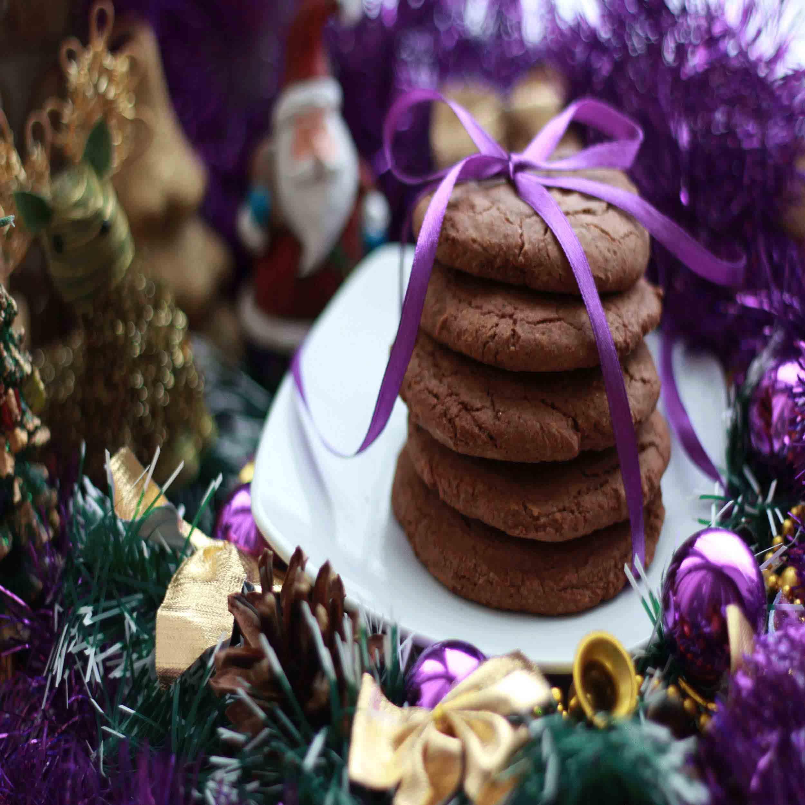

The Treat-ditional Christmas Recipe Cookbook
Is there a time of year where the phrase “I made cookies!” is greeted with more excitement? It’s hard to tell who is more excited, the lucky recipient or the baker. Holiday baking means layered treats, sugar-dusted biscuits, not to mention icing, sprinkles and cutouts galore. Serious bakers have been looking forward to this time of year since, oh, Labour Day. And whether you’re one of them or a novice, we’ve got exactly what you need to make your cookie baking a success from start to finish (read: milk-dunk). We’ve rounded up some of our favourite holiday cookie recipes plus the three tips you’ll need specifically for these festive batches. From working ahead to shipping cross-country, here’s how to make holiday cookies like Santa’s star elf.
Linzer Cookies

Phil’s Chickpea Chocolate Mint Chip Cookies
Ginger Sparkle Cookies